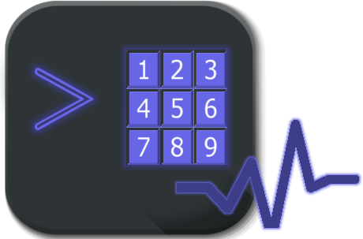

Utilitários
Abaixo segue a lista dos utilitários que estão disponíveis no projeto.PRIsh
PRISh é um utilitário em linha de comando, feito em uma linguagem de Script chamada Bash. A sua principal meta é atingir um público que tem uma coordenação motora limitada. PRIsh é orientado a teclas númericas e conta com uma sessão de menus sendo elas: Menu Principal e Submenus.
Roda aonde?
- Distribuições Linux
Download
GithubComo Utilizar?
PRIjs
PRIjs é um utilitário web que mostra na tela um menu com um conjunto de frases e através de um controlador simples (como as setas de um teclado de computador ou botões simples na tela) o usuário pode reproduzir o aúdio dessas frases. O nosso foco são pessoas que tem limitações na sua comunicação e movimentação, por isso é desenvolvido para ser simples e utilizar o mínimo de esforço do usuário. O PRIjs é majoritariamente feito em JavaScript.
Roda aonde?
- Navegadores WEB de computadores e smartphones.
Download
GithubComo Utilizar?
Acesse o site do PRIjs aqui.
Para usar utilize os botões na tela:
O botão da esquerda movimenta a lista para cima e o da direita  movimenta a lista para baixo.Quando a frase que deseja reproduzir estiver destacada aperte o botão do meio e poderá ouvir o áudio da frase pela saída de som do seu dispositivo.
Se estiver em computador é possível utilizar as setas do teclado para acionar os botões.
movimenta a lista para baixo.Quando a frase que deseja reproduzir estiver destacada aperte o botão do meio e poderá ouvir o áudio da frase pela saída de som do seu dispositivo.
Se estiver em computador é possível utilizar as setas do teclado para acionar os botões.
- Seta para cima: Ativa o botão da esquerda.
- Seta para baixo: Ativa o botão da direita.
- Seta para direita: Ativa o botão do meio.
PRIpy
Roda aonde?
Download
GithubComo Utilizar?